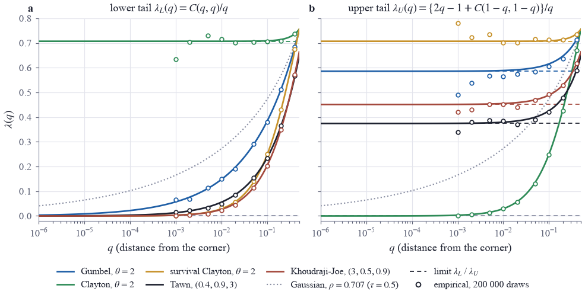

Tail dependence and asymmetry¶
Program: example/ex04_tails.f90, example/python/ex04_tails.py,
example/r/ex04_tails.R · Topics: tail dependence
coefficients, cdf, rotations, Tawn and Khoudraji asymmetric families, BIC selection with
and without the generic families.
Two copulas can have the same Kendall tau and behave completely differently in the corners. This program takes five copulas with very different tails and measures their tail dependence three ways:
- the limit \(\lambda_L\) or \(\lambda_U\) from the family's formula;
- the exact finite-level coefficient from the copula distribution function, $$ \lambda_L(q) = \frac{C(q, q)}{q}, \qquad \lambda_U(q) = \frac{1 - 2(1 - q) + C(1 - q, 1 - q)}{q}, $$ at \(q = 10^{-2}\) and \(q = 10^{-4}\) (here \(q\) is the distance from the corner);
- the empirical coefficient: the fraction of a 200 000-point sample in the corner square of side \(q = 0.01\), divided by \(q\).
It then asks which family BIC selects from 2000 observations of each copula.
Code¶
! ex04_tails -- tail dependence of five pair copulas, three ways: the limit from the family
! formula, the exact coefficient at a finite level from the copula CDF, and the empirical
! coefficient of a simulated sample. Then: which family does BIC select from each sample?
!
! lower tail lambda_L(q) = C(q, q) / q -> lambda_L as q -> 0
! upper tail lambda_U(q) = (1 - 2 q + C(q, q)) / (1 - q) -> lambda_U as q -> 1
program ex04_tails
use fortvine_api
implicit none
integer, parameter :: dp = kind(1.0d0), n = 200000, m = 2000, nc = 5
type(fv_bicop) :: cop(nc), chosen
type(fv_controls) :: ctl
real(dp), allocatable :: u1(:), w(:), u2(:) ! large samples: heap, not stack (-fopenmp)
real(dp) :: lim(2, nc), th, a, b
integer, allocatable :: gen(:)
integer :: k
allocate(u1(n), w(n), u2(n))
! the five copulas (par = family parameters, unused slots 0)
cop(1)%family = FV_GUMBEL; cop(1)%par = [2.0_dp, 0.0_dp, 0.0_dp]
cop(2)%family = FV_CLAYTON; cop(2)%par = [2.0_dp, 0.0_dp, 0.0_dp]
cop(3)%family = FV_CLAYTON; cop(3)%par = [2.0_dp, 0.0_dp, 0.0_dp]; cop(3)%rotation = 180
cop(4)%family = FV_TAWN; cop(4)%par = [0.4_dp, 0.9_dp, 3.0_dp] ! psi1, psi2, theta
cop(5)%family = 20300; cop(5)%par = [3.0_dp, 0.5_dp, 0.9_dp] ! Khoudraji-Joe: theta, a, b
! limits (lambda_L, lambda_U) from the family formulas
th = 2.0_dp
lim(:, 1) = [0.0_dp, 2.0_dp - 2.0_dp**(1.0_dp / th)] ! Gumbel
lim(:, 2) = [2.0_dp**(-1.0_dp / th), 0.0_dp] ! Clayton
lim(:, 3) = [0.0_dp, 2.0_dp**(-1.0_dp / th)] ! survival Clayton
a = 0.4_dp; b = 0.9_dp; th = 3.0_dp
lim(:, 4) = [0.0_dp, a + b - (a**th + b**th)**(1.0_dp / th)] ! Tawn
a = 0.5_dp; b = 0.9_dp; th = 3.0_dp
lim(:, 5) = [0.0_dp, a + b - (a**th + b**th)**(1.0_dp / th)] ! Khoudraji-Joe
print '(a)', ' | lower tail lambda_L(q) | upper tail lambda_U(q)'
print '(a)', 'copula rot | limit q=1e-2 q=1e-4 sample | limit q=1e-2 q=1e-4 sample'
do k = 1, nc
call simulate(cop(k), 1000 + k)
print '(a20,i3,a,4f8.3,a,4f8.3)', fv_fam_name(cop(k)%family), cop(k)%rotation, ' | ', &
lim(1, k), lam_lower(cop(k), 1.0e-2_dp), lam_lower(cop(k), 1.0e-4_dp), &
count(u1 < 1.0e-2_dp .and. u2 < 1.0e-2_dp) / (n * 1.0e-2_dp), ' | ', &
lim(2, k), lam_upper(cop(k), 1.0e-2_dp), lam_upper(cop(k), 1.0e-4_dp), &
count(u1 > 1 - 1.0e-2_dp .and. u2 > 1 - 1.0e-2_dp) / (n * 1.0e-2_dp)
end do
! BIC selection from the first m rows of each sample: default family set (hand-coded
! parametric families with rotations), then the same plus every generic family
gen = fv_generic_families()
print '(/,a)', 'BIC selection from 2000 observations:'
do k = 1, nc
call simulate(cop(k), 1000 + k)
call chosen%select(u1(1:m), u2(1:m))
write(*, '(2x,a14,a,a10,a,i3)', advance='no') fv_fam_name(cop(k)%family), ' default set: ', &
fv_fam_name(chosen%family), ' rot', chosen%rotation
ctl%nfam = 24 + size(gen); ctl%family_set = 0
ctl%family_set(1:24) = FV_ALL; ctl%family_set(25:ctl%nfam) = gen
call chosen%select(u1(1:m), u2(1:m), ctl)
print '(a,a14,a,i3)', ' + generic families: ', fv_fam_name(chosen%family), ' rot', chosen%rotation
end do
contains
! n draws of (u1, u2) from c by the inverse Rosenblatt transform, reproducible from seed
subroutine simulate(c, seed)
type(fv_bicop), intent(in) :: c
integer, intent(in) :: seed
integer :: ns, j
integer, allocatable :: s(:)
call random_seed(size=ns)
s = [(seed + 7919 * j, j = 1, ns)]
call random_seed(put=s)
call random_number(u1); call random_number(w)
call c%hinv1(u1, w, u2) ! u2 = h1^-1(w | u1)
end subroutine simulate
real(dp) function lam_lower(c, q)
type(fv_bicop), intent(in) :: c
real(dp), intent(in) :: q
real(dp) :: cq(1)
call c%cdf([q], [q], cq)
lam_lower = cq(1) / q
end function lam_lower
real(dp) function lam_upper(c, q) ! q is the distance from 1
type(fv_bicop), intent(in) :: c
real(dp), intent(in) :: q
real(dp) :: cq(1)
call c%cdf([1 - q], [1 - q], cq)
lam_upper = (2 * q - 1 + cq(1)) / q
end function lam_upper
end program ex04_tails
"""ex04_tails -- tail dependence of five pair copulas, three ways: the limit from the family
formula, the exact coefficient at a finite level from the copula CDF, and the empirical
coefficient of a simulated sample. Then: which family does BIC select from each sample?
lower tail lambda_L(q) = C(q, q) / q -> lambda_L as q -> 0
upper tail lambda_U(q) = (2 q - 1 + C(1-q, 1-q)) / q -> lambda_U as q -> 0
The Python version of example/ex04_tails.f90 (pip install ./python).
"""
import numpy as np
import fortvine as fv
n, m = 200000, 2000
# the five copulas (parameters as in the Fortran program)
cops = [fv.Bicop("gumbel", 0, [2.0]),
fv.Bicop("clayton", 0, [2.0]),
fv.Bicop("clayton", 180, [2.0]),
fv.Bicop("tawn", 0, [0.4, 0.9, 3.0]), # psi1, psi2, theta
fv.Bicop(20300, 0, [3.0, 0.5, 0.9])] # Khoudraji-Joe: theta, a, b
# limits (lambda_L, lambda_U) from the family formulas
th = 2.0
lim = [(0.0, 2 - 2 ** (1 / th)), # Gumbel
(2 ** (-1 / th), 0.0), # Clayton
(0.0, 2 ** (-1 / th))] # survival Clayton
for a, b, th in [(0.4, 0.9, 3.0), (0.5, 0.9, 3.0)]: # Tawn, Khoudraji-Joe
lim.append((0.0, a + b - (a ** th + b ** th) ** (1 / th)))
def simulate(c, seed, size=n):
"""size draws of (u1, u2) from c by the inverse Rosenblatt transform, reproducible from seed"""
rng = np.random.default_rng(seed)
u1, w = rng.random(size), rng.random(size)
return np.column_stack([u1, c.hinv1(np.column_stack([u1, w]))]) # u2 = h1^-1(w | u1)
def lam_lower(c, q):
return c.cdf([[q, q]])[0] / q
def lam_upper(c, q): # q is the distance from 1
return (2 * q - 1 + c.cdf([[1 - q, 1 - q]])[0]) / q
f8 = lambda xs: "".join(f"{x:8.3f}" for x in xs)
print(" | lower tail lambda_L(q) | upper tail lambda_U(q)")
print("copula rot | limit q=1e-2 q=1e-4 sample | limit q=1e-2 q=1e-4 sample")
for k, c in enumerate(cops):
u = simulate(c, 1000 + k + 1)
low = np.mean((u[:, 0] < 0.01) & (u[:, 1] < 0.01)) / 0.01
upp = np.mean((u[:, 0] > 0.99) & (u[:, 1] > 0.99)) / 0.01
print(f"{c.family:<20s}{c.rotation:3d} | "
+ f8([lim[k][0], lam_lower(c, 1e-2), lam_lower(c, 1e-4), low]) + " | "
+ f8([lim[k][1], lam_upper(c, 1e-2), lam_upper(c, 1e-4), upp]))
# BIC selection from m observations of each copula: default family set (hand-coded parametric
# families with rotations), then the same plus every generic family
allfam = list(range(24)) + [f.code for f in fv.families() if f.code >= 10000]
print("\nBIC selection from 2000 observations:")
for k, c in enumerate(cops):
u = simulate(c, 1000 + k + 1)[:m]
d = fv.Bicop().select(u, num_threads=4)
g = fv.Bicop().select(u, family_set=allfam, num_threads=4)
print(f" {c.family:<14s} default set: {d.family:<10s} rot{d.rotation:3d}"
f" + generic families: {g.family:<14s} rot{g.rotation:3d}")
# ex04_tails -- tail dependence of five pair copulas, three ways: the limit from the family
# formula, the exact coefficient at a finite level, and the empirical coefficient of a simulated
# sample. Then: which family does BIC select from each sample?
# The R version of example/ex04_tails.f90 (R CMD INSTALL r).
#
# The R package has no copula distribution function C (the C interface does not export it), so
# the finite-level coefficients are computed from the h-function h1(s, v) = dC(s, v)/ds:
# lower tail lambda_L(q) = C(q, q) / q = (1/q) * integral_0^q h1(s, q) ds
# upper tail lambda_U(q) = P(U1 > 1-q, U2 > 1-q) / q = (1/q) * integral_{1-q}^1 (1 - h1(s, 1-q)) ds
library(fortvine)
n <- 200000; m <- 2000
# the five copulas (parameters as in the Fortran program)
cops <- list(bicop_dist("gumbel", 0, 2),
bicop_dist("clayton", 0, 2),
bicop_dist("clayton", 180, 2),
bicop_dist("tawn", 0, c(0.4, 0.9, 3)), # psi1, psi2, theta
bicop_dist(20300, 0, c(3, 0.5, 0.9))) # Khoudraji-Joe: theta, a, b
# limits (lambda_L, lambda_U) from the family formulas
th <- 2
lim <- list(c(0, 2 - 2^(1 / th)), # Gumbel
c(2^(-1 / th), 0), # Clayton
c(0, 2^(-1 / th)), # survival Clayton
c(0, 0.4 + 0.9 - (0.4^3 + 0.9^3)^(1 / 3)), # Tawn
c(0, 0.5 + 0.9 - (0.5^3 + 0.9^3)^(1 / 3))) # Khoudraji-Joe
# n draws of (u1, u2) from cop by the inverse Rosenblatt transform, reproducible from seed
simulate <- function(cop, seed, size = n) {
set.seed(seed)
u1 <- runif(size); w <- runif(size)
cbind(u1, hbicop(cbind(u1, w), 1, cop, inverse = TRUE)) # u2 = h1^-1(w | u1)
}
h1 <- function(s, v, cop) hbicop(cbind(s, v), 1, cop)
lam_lower <- function(cop, q)
integrate(h1, 0, q, v = q, cop = cop, rel.tol = 1e-10)$value / q
lam_upper <- function(cop, q) # q is the distance from 1
integrate(function(s) 1 - h1(s, 1 - q, cop), 1 - q, 1, rel.tol = 1e-10)$value / q
f8 <- function(x) paste(sprintf("%8.3f", x), collapse = "")
cat(" | lower tail lambda_L(q) | upper tail lambda_U(q)\n")
cat("copula rot | limit q=1e-2 q=1e-4 sample | limit q=1e-2 q=1e-4 sample\n")
for (k in seq_along(cops)) {
cop <- cops[[k]]
u <- simulate(cop, 1000 + k)
low <- mean(u[, 1] < 0.01 & u[, 2] < 0.01) / 0.01
upp <- mean(u[, 1] > 0.99 & u[, 2] > 0.99) / 0.01
cat(sprintf("%-20s%3d | ", cop$family, cop$rotation),
f8(c(lim[[k]][1], lam_lower(cop, 1e-2), lam_lower(cop, 1e-4), low)), " | ",
f8(c(lim[[k]][2], lam_upper(cop, 1e-2), lam_upper(cop, 1e-4), upp)), "\n", sep = "")
}
# BIC selection from m observations of each copula: default family set (hand-coded parametric
# families with rotations), then the same plus every generic family
cat("\nBIC selection from 2000 observations:\n")
for (k in seq_along(cops)) {
cop <- cops[[k]]
u <- simulate(cop, 1000 + k)[1:m, ]
d <- bicop(u, family_set = "all", cores = 4)
g <- bicop(u, family_set = list(0:23, "generic"), cores = 4)
cat(sprintf(" %-14s default set: %-10s rot%3d + generic families: %-14s rot%3d\n",
cop$family, d$family, d$rotation, g$family, g$rotation))
}
The distribution function in R
The R script computes the finite-level coefficients from the h-function of the library:
\(C(q, q) = \int_0^q h_1(s, q)\, ds\) and
\(P(U_1 > 1 - q, U_2 > 1 - q) = \int_{1-q}^1 \bigl(1 - h_1(s, 1 - q)\bigr)\, ds\), by
adaptive quadrature (integrate). The values agree with the CDF of the Fortran and Python
programs to the printed digits. pbicop(u, cop) evaluates \(C\) directly and gives the same
values, e.g. pbicop(cbind(q, q), cop) / q for \(\lambda_L(q)\).
Output¶
| lower tail lambda_L(q) | upper tail lambda_U(q)
copula rot | limit q=1e-2 q=1e-4 sample | limit q=1e-2 q=1e-4 sample
gumbel 0 | 0.000 0.148 0.022 0.150 | 0.586 0.589 0.586 0.565
clayton 0 | 0.707 0.707 0.707 0.716 | 0.000 0.029 0.000 0.031
clayton 180 | 0.000 0.029 0.000 0.035 | 0.707 0.707 0.707 0.703
tawn 0 | 0.000 0.056 0.003 0.049 | 0.374 0.379 0.374 0.385
Khoudraji-Joe 0 | 0.000 0.027 0.000 0.022 | 0.451 0.455 0.451 0.453
BIC selection from 2000 observations:
gumbel default set: galambos rot 0 + generic families: galambos rot 0
clayton default set: clayton rot 0 + generic families: clayton rot 0
clayton default set: clayton rot180 + generic families: clayton rot180
tawn default set: tawn rot 0 + generic families: tawn rot 0
Khoudraji-Joe default set: tawn rot 0 + generic families: Khoudraji-Joe rot 0
| lower tail lambda_L(q) | upper tail lambda_U(q)
copula rot | limit q=1e-2 q=1e-4 sample | limit q=1e-2 q=1e-4 sample
gumbel 0 | 0.000 0.148 0.022 0.150 | 0.586 0.589 0.586 0.623
clayton 0 | 0.707 0.707 0.707 0.685 | 0.000 0.029 0.000 0.028
clayton 180 | 0.000 0.029 0.000 0.035 | 0.707 0.707 0.707 0.699
tawn 0 | 0.000 0.056 0.003 0.053 | 0.374 0.379 0.374 0.363
Khoudraji-Joe 0 | 0.000 0.027 0.000 0.023 | 0.451 0.455 0.451 0.462
BIC selection from 2000 observations:
gumbel default set: gumbel rot 0 + generic families: gumbel rot 0
clayton default set: joe rot180 + generic families: joe rot180
clayton default set: clayton rot180 + generic families: clayton rot180
tawn default set: tawn rot 0 + generic families: Joe-asymneglogistic rot 0
Khoudraji-Joe default set: tawn rot 0 + generic families: Khoudraji-Joe rot 0
| lower tail lambda_L(q) | upper tail lambda_U(q)
copula rot | limit q=1e-2 q=1e-4 sample | limit q=1e-2 q=1e-4 sample
gumbel 0 | 0.000 0.148 0.022 0.135 | 0.586 0.589 0.586 0.579
clayton 0 | 0.707 0.707 0.707 0.702 | 0.000 0.029 0.000 0.033
clayton 180 | 0.000 0.029 0.000 0.028 | 0.707 0.707 0.707 0.683
tawn 0 | 0.000 0.056 0.003 0.054 | 0.374 0.379 0.374 0.349
Khoudraji-Joe 0 | 0.000 0.027 0.000 0.028 | 0.451 0.455 0.451 0.444
BIC selection from 2000 observations:
gumbel default set: gumbel rot 0 + generic families: gumbel rot 0
clayton default set: clayton rot 0 + generic families: clayton rot 0
clayton default set: clayton rot180 + generic families: clayton rot180
tawn default set: tawn rot 0 + generic families: tawn rot 0
Khoudraji-Joe default set: tawn rot 0 + generic families: Khoudraji-Joe rot 0
All samples use fixed seeds, so each output is reproducible (the Fortran program takes about 4 seconds, mostly the two selections over 109 families per copula). The limits and the finite-level columns are exact and the same in all three languages. The "sample" columns and the selections depend on the random draws, which differ between Fortran, NumPy and R: on the Python samples BIC picks survival Joe (also lower-tail dependent) for the Clayton data, and with the generic families Joe-asymneglogistic (another asymmetric extreme-value-type upper tail) for the Tawn data. The discussion below refers to the Fortran run.
The five copulas and their tail formulas¶
| Copula | Parameters | Tail formula | \(\lambda_L\) | \(\lambda_U\) |
|---|---|---|---|---|
| Gumbel | \(\theta = 2\) | \(\lambda_U = 2 - 2^{1/\theta}\) | 0 | 0.586 |
| Clayton | \(\theta = 2\) | \(\lambda_L = 2^{-1/\theta}\) | 0.707 | 0 |
| Clayton rotated 180° (survival Clayton) | \(\theta = 2\) | \(\lambda_U = 2^{-1/\theta}\) | 0 | 0.707 |
| Tawn (asymmetric logistic) | \((\psi_1, \psi_2, \theta) = (0.4, 0.9, 3)\) | \(\lambda_U = \psi_1 + \psi_2 - (\psi_1^\theta + \psi_2^\theta)^{1/\theta}\) | 0 | 0.374 |
| Khoudraji-Joe (code 20300) | \((\theta, a, b) = (3, 0.5, 0.9)\) | \(\lambda_U = a + b - (a^\theta + b^\theta)^{1/\theta}\) | 0 | 0.451 |
The last two formulas follow from the tail behaviour of extreme-value-type copulas. Near \((1, 1)\) any copula with upper tail dependence behaves like \(C(1 - x, 1 - y) \approx 1 - \ell(x, y)\) with the stable tail dependence function \(\ell\), and \(\lambda_U = 2 - \ell(1, 1)\). For an extreme-value copula with Pickands function \(A\), \(\ell(x, y) = (x + y) A(y / (x + y))\), so \(\lambda_U = 2(1 - A(1/2))\). Tawn's model has \(A(w) = (1 - \psi_1)(1 - w) + (1 - \psi_2) w + [(\psi_1 (1 - w))^\theta + (\psi_2 w)^\theta]^{1/\theta}\), which gives the formula in the table. For the Khoudraji construction \(C(u, v) = u^{1-a} v^{1-b} C_0(u^a, v^b)\), expanding each factor at \((1 - x, 1 - y)\) gives \(\ell(x, y) = (1 - a)x + (1 - b)y + \ell_0(ax, by)\); with Joe's \(\ell_0(x, y) = (x^\theta + y^\theta)^{1/\theta}\) this yields \(\lambda_U = a + b - \ell_0(a, b)\), the same expression as for Tawn: Khoudraji-Joe and Tawn share their upper tail structure but not their bodies.
Reading the table¶
The finite-level coefficients converge, at very different speeds. For Clayton, \(\lambda_L(q) = (2 - q^{\theta})^{-1/\theta}\), so the lower tail coefficient is already 0.707 at \(q = 0.01\). For the zero limits, the convergence can be slow: Gumbel's lower tail coefficient is 0.148 at \(q = 0.01\) and still 0.022 at \(q = 10^{-4}\), since \(C(q, q)/q = q^{2^{1/\theta} - 1}\) decays only like \(q^{0.41}\). A finite sample never reaches the limit; an empirical tail coefficient estimates the finite-level value, as the "sample" columns show (0.150 against 0.148, 0.565 against 0.589, and so on, within the binomial noise of roughly \(\pm 0.02\) for about 1000-1500 corner points).

The rotation swaps the tails. Survival Clayton has exactly the numbers of Clayton with the two tails exchanged, because \(C_{180}(u, v) = u + v - 1 + C(1 - u, 1 - v)\).
Asymmetric families keep their tail where the formula says. Tawn and Khoudraji-Joe have no lower tail dependence and upper tail coefficients 0.374 and 0.451, reproduced by the CDF to three decimals at \(q = 10^{-4}\).
Khoudraji copulas lose the base copula's lower tail
The catalogue flags Khoudraji-Clayton (20200) as a lower-tail family because its base copula is one, and the flag is used to decide which rotations to try. Unless \(a = b = 1\) the construction actually has \(\lambda_L = 0\): with \(a \le b\), \(C(t, t) \le t^{2 - a - b}\, t^{b} = t^{2 - a}\), so \(C(t, t)/t \to 0\). Only the upper tail survives the asymmetrisation, as in this example.
Which family does BIC select?¶
- Gumbel → Galambos. Gumbel and Galambos are both extreme-value copulas, with Pickands functions that are nearly indistinguishable for comparable dependence. With 2000 observations the data cannot separate them; BIC takes the one with the marginally higher likelihood. Both have \(\lambda_L = 0\) and a positive \(\lambda_U\), so tail inference is not affected.
- Clayton and survival Clayton are recovered with the correct rotation. Rotation selection is driven by the sign of Kendall's tau (0 or 180 for positive dependence) and by which half of the data is more strongly correlated in normal scores.
- Tawn is recovered by both family sets.
- Khoudraji-Joe is not in the default family set, so the default selection settles for the closest available model, Tawn, which has the same kind of asymmetric upper tail. Once the generic families are added, BIC picks the true family.
Tail dependence in a model matters for joint exceedance probabilities. A Gaussian copula with the same Kendall tau as the Gumbel copula above (\(\tau = 0.5\), \(\rho = 0.707\)) has \(\lambda_U(q) = 0.273\) at \(q = 10^{-2}\) and \(0.103\) at \(q = 10^{-4}\), against Gumbel's 0.589 and 0.586: at the 1-in-10 000 level the Gaussian model underestimates the chance of a joint extreme almost sixfold. Selecting among families with the right tail behaviour, including the generic ones when asymmetry is suspected, is the point of having many families.
See also Rotations and asymmetry, Extreme-value families and Khoudraji asymmetrisation.